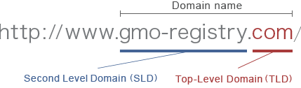
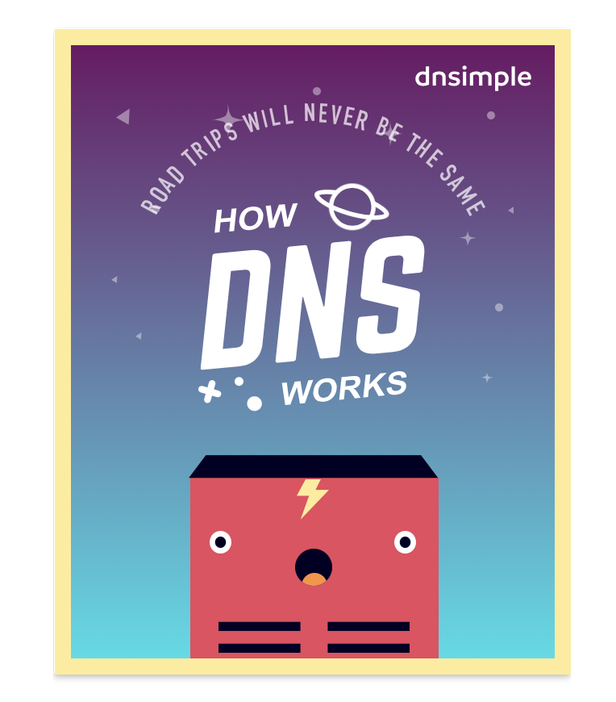
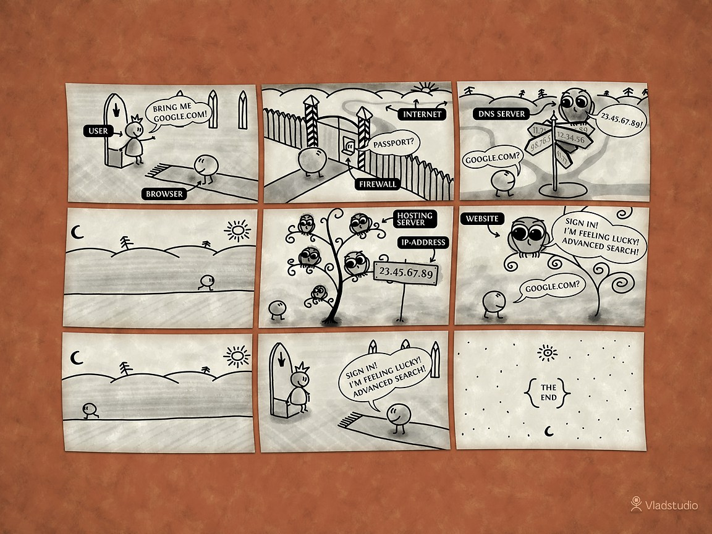

Domain Names, IP Addresses and DNS
Table of Contents
1 Learning Objectives
- In this lesson you will develop an understanding of the learning strand Communication & Networks on your progress ladder, working towards yellow level.
Understanding and being able to explain:
- What is a domain name and why we use them
- What are IP addresses and why we use them
- What is DNS and how it works and uses both domain names and IP addresses.
2 URLs and Domain Names
Look at your browser's address bar. What ever is written there is the
URL of the page you are on.
What ever is written there after the http://www but before the first / is the domain name of the site you are on.

You'll be very familiar with some domain names like;
google.com facebook.com yahoo.com youtube.com wikipedia.org
Research It
- There are lots of Top Level Domains available to website owners.
.com,.org, and.co.ukare just some of a few.- Gather a list of 10 other Top Level Domains that are available.
Present It
- Explain what a Top Level Domain is and give some examples for your notes.
3 IP addresses
Research It
- Domain names are a little like addresses. For instance, the Prime Minister lives at:
10 Downing Street London, SW1A 2AA
- This is nice and easy for humans to say and remember.
- Another way of saying where the Prime Minister lives would be to use Longitude and Latitude.
51° 30′ 12.23″ N, 0° 7′ 39.5″ W
- This is tricky for a human to remember but great for a computer.
Key Points to Remember
- Domain names are like address, they are designed for humans to read and remember. In reality a computer's address (that allows other computers on a network or the internet to find it), is made up of numbers.
- Computer use
IP addressesto send messages to each other. Your Computer's current IP address should be shown below
- We need domain names because IP addresses are too difficult for humans to remember.
- Imagine typing in this every time you needed to go to a certain web address. Try the following in your home browser and see where each of the IP addresses takes you to. Note: those will not work inside school as accessing websites by IP addresses are blocked.
http://216.58.198.163
- Try these as well at home and note the corresponding domains:
1. http://212.58.244.23 2. http://10.0.77.186 3. http://91.198.174.192
Present It
- Answer the following questions in your notes.
- What is a domain name?
- What is an IP address?
- Why do humans not use IP addresses?
4 The DNS
Research It
You can use the following animated tutorail to help you understand how DNS work
OR
You can use the following videos to help you.
- Below are three videos, each explaining DNS in a little more detail. You can watch just the first, or all three, but make sure you understand what DNS is.
Badge It:
- Imagine you had to explain DNS to somebody who had no idea what it was.
- Using whatever software you like (or even pen and paper if you prefer), create a product that you could use to help explain DNS to someone. You could create a poster, a presentation, a report, an illustrated art work. It's really up to you.
- You'll be awarded a bronze, silver or gold badge, depending on your teacher's assessment of your understanding of DNS.
